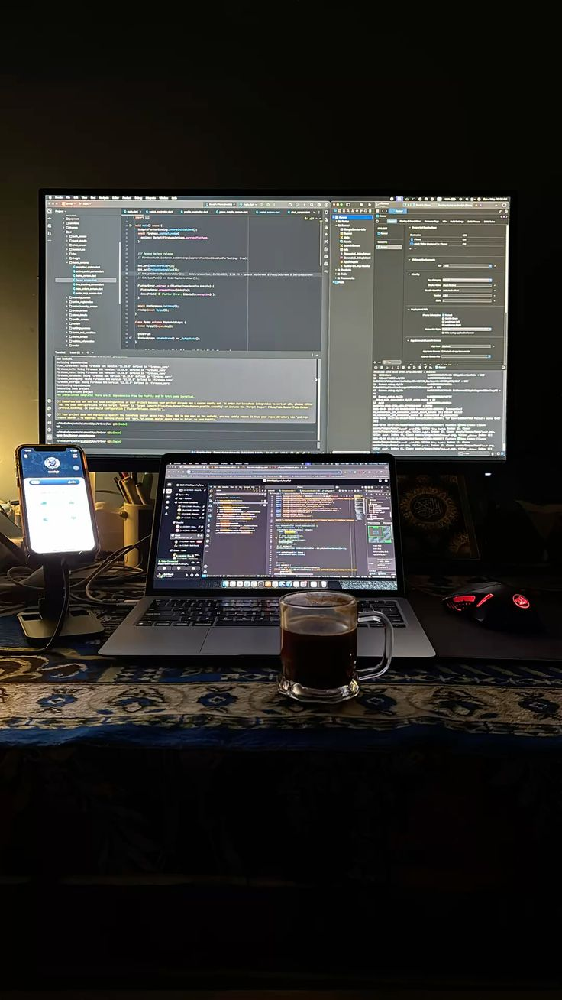

About Me
With a strong eye for design and a deep appreciation for clean,
maintainable code,
I focus on developing interfaces that not only look great but also
deliver seamless user experiences across different devices and screen
sizes.
I enjoy solving complex problems, exploring new technologies, and
continuously improving my skills to stay up to date with the
ever-evolving world of web development.
You can check out some of my works, projects, and CV. By clicking the links. My GitHub Profile›
My Services
- Web Design and Development
- Responsive Design for Mobile and Desktop
- UI/UX Design and Prototyping
- Front-end Development with HTML, CSS, and JavaScript
- Performance Optimization and SEO Best Practices
